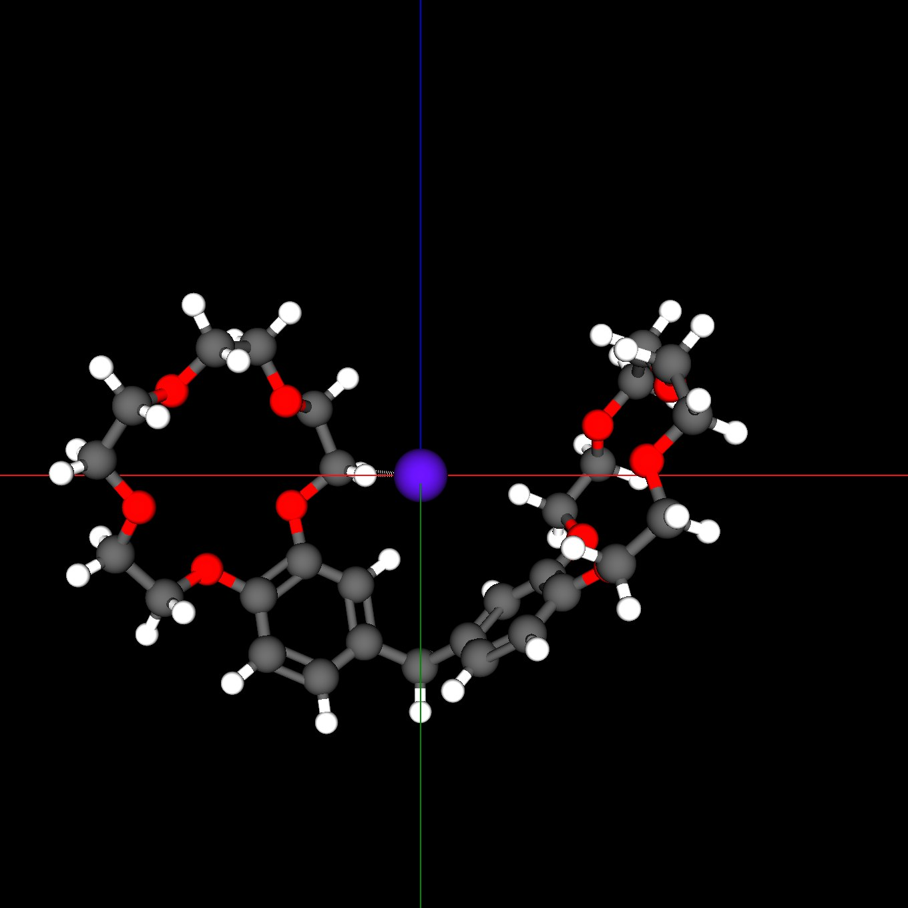
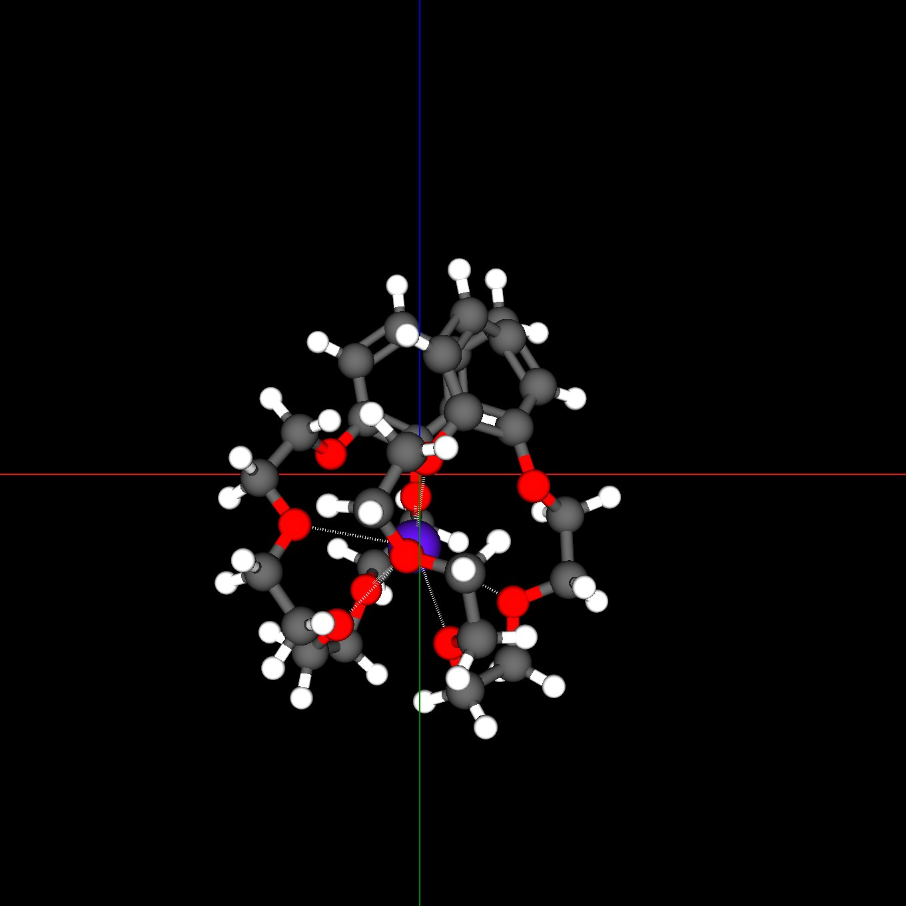
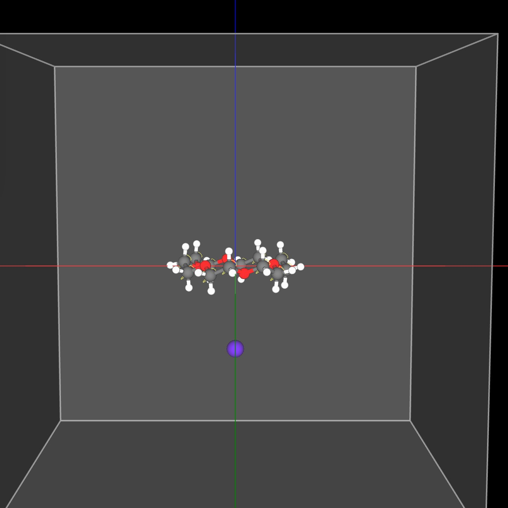
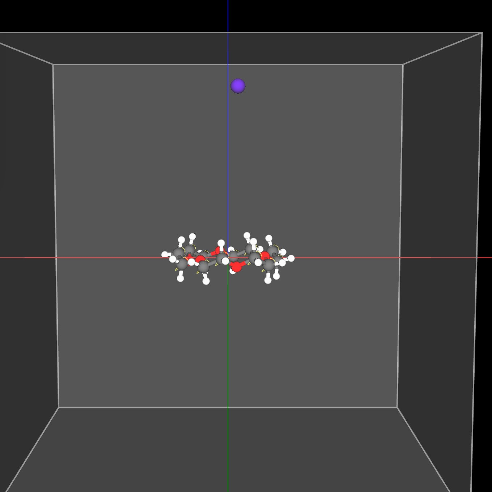
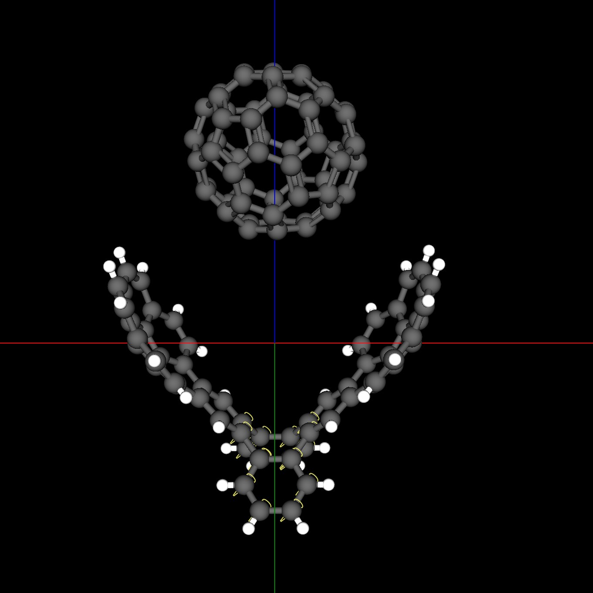
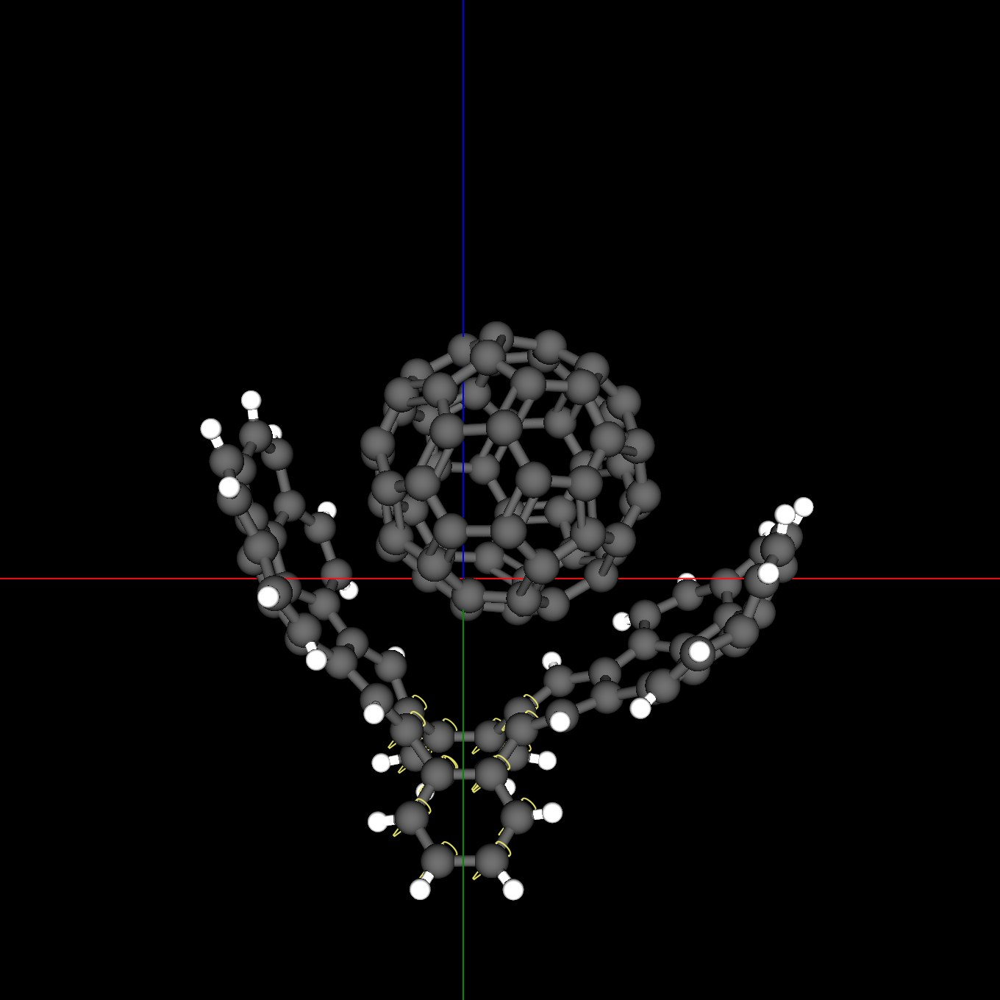

Molecular Machines: Shuttles, Clamps, Pumps, and Tweezers
Simulations in AIMS show a ring moving between two stations on an axle, a clamp closing on an ion, an electric field driving an ion through a ring, and tweezers gripping a buckyball, and an AI agent measures each motion.
A machine has parts that move in a controlled way. A molecular machine is a machine whose parts are single molecules: a ring that moves along an axle, a wheel that turns on a shaft, a tube that slides inside another tube. AIMS models every atom of such a part, and an AI agent sets up the experiments. A student asks a plain-language question, and the agent builds the molecules, runs them, measures the motion, and posts the measured data in the chat. This article follows four parts built on rings and the guests that they hold: a shuttle, in which a ring moves between two positions on an axle; a clamp, a molecule that closes on an ion; a pump, a ring through which an electric field drives an ion; and tweezers, two arms that grip a buckyball. Two companion articles follow parts that turn (molecular rotors and gears) and parts that slide (nanotube machines). In the window below, a ring sits at the right end of an axle at 300 K. Press Play and watch the ring move to the left.
A ring on an axle with two nitrogen atoms (blue). The left nitrogen carries a charge, and the ring starts around the right nitrogen. The ring reaches the left nitrogen within a few picoseconds of Play.
What Is a Molecular Machine?
Living cells are full of molecular machines. A kinesin protein walks along a filament and carries cargo, and ATP synthase has a rotor that turns inside a stator. Chemists began to build machines of their own in the 1980s and 1990s. In 1991 Anelli, Spencer, and Stoddart made a rotaxane whose ring moves back and forth between two identical positions on its axle and named it a molecular shuttle. In 1994 Bissell, Córdova, Kaifer, and Stoddart made a shuttle with two different positions and switched the ring from one to the other with an acid. In 1999 Koumura, Feringa, and coworkers made a molecule that turns in one direction when light shines on it. Jean-Pierre Sauvage, Fraser Stoddart, and Ben Feringa shared the 2016 Nobel Prize in Chemistry for the design and synthesis of molecular machines.
Three terms appear in the examples below. A position on an axle where a ring is held is called a station. A signal is a change that a chemist makes from outside, such as adding an acid, and a switch is a machine that takes one of two states according to the signal. The companion article on supramolecular chemistry shows how a ring comes to sit at a charged nitrogen atom of an axle, and this article starts from that result.
The Forces in the Model
No covalent bond joins the moving part of a molecular machine to the rest. Two forces act between the parts in this lab. The first is the electrostatic force of Coulomb's law between the partial charges of the atoms, which the lab assigns with the method of Gasteiger and Marsili. The second is the Lennard-Jones force, with the atom sizes of the Universal Force Field: a weak attraction between atoms a few ångströms apart and a strong repulsion between atoms that overlap. The ring of the shuttle is the crown ether dibenzo-24-crown-8, a circle of 24 atoms with eight oxygen atoms, and each oxygen atom carries −0.38 e. A nitrogen atom with two hydrogen atoms and a charge of +1 e attracts those oxygen atoms. In the last example the Lennard-Jones force holds a buckyball between the two arms of the tweezers. Every example runs in a vacuum.
Running Experiments by Asking
AIMS is an AI-native environment. Building the molecules, running them, pulling on them, and plotting the results are the agent's work. A student asks the agent to "move the extra hydrogen to the other nitrogen and run it again", and the agent recognizes the intent, configures the lab, runs the experiment, and posts the results in the conversation.
Go to AIMS and open the list of examples, with the lightbulb button on the toolbar or the Examples item in the main menu (☰). Open A Molecular Shuttle from the list (Nanotechnology, Molecular Machines), open the chat, and type the prompts below. The answer to the second prompt in the example keeps its last frame: press "Load this state" on its card and the lab shows the ring back at the right nitrogen.
- First crossing — “Run it, and chart the distance from each nitrogen to one oxygen atom of the ring.”
- Switch — “Now move the extra hydrogen from the left nitrogen to the right nitrogen, keep everything else as it is, and run it again.”
- Four states — “What does the ring do when both nitrogens are charged, or neither? Start the ring at the right nitrogen each time.”
The Ring Follows the Charge
The axle of the shuttle has two nitrogen atoms 6.3 Å apart, joined by a chain of four carbon atoms. Each end of the axle carries a stopper: a benzene ring with two tert-butyl groups. The axle has 93 atoms and the ring has 64. Each nitrogen atom is a station. A nitrogen atom that carries one extra hydrogen atom has a charge of +1 e. The lab starts with the extra hydrogen atom on the left nitrogen and the ring around the right nitrogen.
The agent ran the lab and charted the distance from each nitrogen atom to one oxygen atom of the ring. The ring stayed within 3 Å of the right nitrogen for 1.4 ps, moved along the chain, and reached the left nitrogen after 2.1 ps. For the rest of the 11 ps run the center of the ring stayed 0.6 Å from the left nitrogen on average and at most 0.9 Å. The second prompt moves the extra hydrogen atom to the right nitrogen and keeps every other atom in place. The ring moved back to the right nitrogen. The agent repeated the change two more times, and the ring followed the hydrogen atom each time.
| Crossing | Charged nitrogen | Ring left the old station | Ring reached the new station |
|---|---|---|---|
| 1 | left | after 1.4 ps | after 2.1 ps |
| 2 | right | after 1.6 ps | after 1.9 ps |
| 3 | left | after 0.9 ps | after 1.7 ps |
| 4 | right | after 1.1 ps | after 3.3 ps |
Four crossings of the ring at 300 K. Each crossing starts from the last frame of the one before, with the extra hydrogen atom moved to the other nitrogen. The times count from the moment the hydrogen atom is moved.
The position of one hydrogen atom is the signal, and the position of the ring is the state of the switch. In the shuttles made in the laboratory, a base removes the hydrogen atom from a nitrogen and an acid returns it. Ashton and coworkers built such a shuttle in 1998 with the same kind of ring: the ring stays at a charged nitrogen in acid and moves to a second station when a base removes the hydrogen atom. The lab does not model the acid and the base. The agent moves the hydrogen atom by replacing the axle with a version that has the hydrogen atom on the other nitrogen. The two stations of this model are identical nitrogen atoms, and the two stations of the laboratory shuttles are different chemical groups.
The distance between the stations matters. In trial runs with six carbon atoms between the nitrogen atoms, 8.7 Å apart, the ring waited between 3 and 179 ps before it crossed in four runs. The pull of the charged nitrogen falls quickly with distance, and from 8.7 Å the ring has to move part of the way by thermal motion before the charge takes hold of it.
Four Ways to Charge the Axle
The third prompt runs the axle in each of its four states for 30 ps at 300 K, with the ring starting at the right nitrogen, and records where the center of the ring was over the last 15 ps.
| Extra hydrogen atom on | Ring to left nitrogen | Ring to right nitrogen | Position of the ring |
|---|---|---|---|
| Left nitrogen | 0.6 Å | 5.6 Å | left nitrogen, after crossing |
| Right nitrogen | 5.6 Å | 0.5 Å | right nitrogen |
| Both | 4.2 Å | 0.8 Å | right nitrogen |
| Neither | 5.5 Å | 0.4 Å | right nitrogen |
The average distance from the center of the ring to each nitrogen atom. The first row is the first crossing above. The other three rows are 30 ps runs with the ring starting at the right nitrogen.
The ring crossed in one state of the four: the other nitrogen charged and its own nitrogen neutral. With the charge on its own nitrogen the ring stayed. With both nitrogen atoms charged, the two charges pull the ring in opposite directions, and the ring stayed at its own nitrogen, 0.8 Å from it on average. With neither charged, no charge pulls the ring away, and the Lennard-Jones attraction kept the ring within 1.8 Å of the nitrogen for the 30 ps.


The ring around the right nitrogen at the start (left), and the ring around the charged left nitrogen a few picoseconds after Play (right). The axle tumbles in the lab, so the second picture shows it from a different side.
The stoppers at the two ends of the axle keep the ring of the shuttle on it. The companion article on interlocked and nested molecules pulls a ring against such stoppers and links two rings into a catenane.
A Clamp That an Ion Closes
The ring of the shuttle moves when a charge moves. A molecule can also change its shape when an ion arrives. A molecular clamp has two crown ether rings joined by a short link. Each ring of the clamp in the window below is benzo-15-crown-5: a circle of fifteen atoms, five of them oxygen atoms, fused to a benzene ring. A potassium ion is too large to lie inside one ring of this size. It rests on one face of the ring, and the second ring can cover its other side. The companion article on supramolecular chemistry shows two separate 15-crown-5 rings that hold one potassium ion between them. In the clamp the two rings belong to one molecule. Kimura, Maeda, Tamura, and Shono used molecules with two crown ether rings in 1979 to make electrodes that respond to potassium ions.
The molecule is bis(benzo-15-crown-5)methane, 79 atoms. One CH2 group joins the two rings and holds them at an angle, with their centers 9.3 Å apart. A potassium ion with a charge of +1 e sits midway between the two rings, and the lab runs at 300 K. Press Play and watch the ion and the two rings. The ion moves to one ring at once. The time before the second ring closes over the ion varies from run to run, and in about half of the trial runs it was longer than 40 ps.
Two crown ether rings joined by a CH2 group, with a potassium ion (purple) between them. The ion moves to one ring, and the other ring closes over it after a time that varies from run to run.
Open An Ion-Operated Clamp from the list of examples (Nanotechnology, Molecular Machines), open the chat, and type the prompts below. The answer to the first prompt in the example keeps its last frame: press "Load this state" on its card and the lab shows the clamp closed on the ion.
- Closing — “Run it, and chart the distance from the potassium ion to one oxygen atom of each ring.”
- Signal — “What does the clamp do without the ion? Run it empty, and then take the ion out of the closed clamp.”
- Three ions — “Does the clamp close on smaller ions? Try lithium, sodium and potassium ions.”
The Ion Closes the Clamp
The agent ran the lab and charted the distance from the ion to one oxygen atom of each ring. The ion reached one ring within 0.1 ps and rested on it. The other ring swung over and closed on the ion after 7.9 ps. For the rest of the 18 ps run an average of 9.1 of the 10 oxygen atoms were within 3.4 Å of the ion, and the centers of the two rings were 3.9 Å apart.
The second prompt runs the clamp in three states for 30 ps each and measures the distance between the centers of the two rings over the last 15 ps.
| State of the clamp | Ring centers apart, average | Smallest and largest |
|---|---|---|
| No ionfrom the open shape | 9.1 Å | 5.0 to 11.4 Å |
| Closed on a potassium ion | 3.9 Å | 3.4 to 4.2 Å |
| Ion removedfrom the closed clamp | 8.7 Å | 6.3 to 10.9 Å |
The distance between the centers of the two rings of the clamp at 300 K. In the third row the agent removed the ion from the closed clamp and kept every other atom in place.
The empty clamp stayed open, with its rings 9.1 Å apart on average. The CH2 group holds the two rings at an angle, and the rings move toward and away from each other with the thermal motion. The ion holds the rings 3.9 Å apart. When the agent removed the ion from the closed clamp, the rings moved apart within 1 ps and stayed 8.7 Å apart on average. The ion is the signal, and the shape of the molecule is the response.
The third prompt starts a lithium, a sodium, and a potassium ion in the mouth of the open clamp, four runs of 40 ps for each ion. The clamp closed in one of the four runs with lithium, in two with sodium, and in one with potassium. The second ring reaches the ion by thermal motion, so the time of closing is random, and four runs do not separate the three ions. In a real solution a clamp of this kind binds potassium more strongly than sodium. One reason is the solvent: a sodium ion holds its shell of solvent molecules more strongly than a potassium ion does. The lab is a vacuum and does not show this difference.


The open clamp with a potassium ion in its mouth at the start (left), and the clamp closed on the ion, loaded by the "Load this state" card (right). The dotted lines join the ion to the oxygen atoms that hold it.
A Pump That an Electric Field Drives
The clamp closes on an ion and holds it. A ring can also let an ion pass. A living cell moves ions across its membrane through proteins whose narrow pores are lined with rings of oxygen atoms. In 1998 Doyle, MacKinnon, and coworkers determined the structure of a potassium channel and showed such rings of oxygen atoms in its pore. A crown ether has the same kind of oxygen-lined hole. One crown ether ring with an electric field through it is the simplest model of a pore, and the field is an energy source that moves the ion in one direction.
The window below holds an 18-crown-6 ring of 42 atoms, lying flat and seen from the side. Its 12 carbon atoms are fixed in place, and its oxygen and hydrogen atoms are free to move. Each oxygen atom carries a charge of −0.38 e. A potassium ion starts at rest 6 Å below the ring. A static electric field of 3 V/nm points up, which puts a force of about 480 pN on the ion. The lab runs at 300 K with the Langevin thermostat, which also takes up the energy that the field gives to the ion. Press Play and watch the ion.
A potassium ion (purple) below an 18-crown-6 ring, in an electric field that points up. The ion passes through the ring and goes on to the top wall of the box in about one picosecond of simulated time.
Open An Electric-Field Ion Pump from the list of examples (Nanotechnology, Molecular Machines), open the chat, and type the prompts below. The answer to the first prompt in the example keeps its last frame: press "Load this state" on its card and the lab shows the ion above the ring.
- Passage — “Run it for 6 ps and chart the distance from the ion to one oxygen atom of the ring.”
- Reverse — “Reverse the field and run another 6 ps.”
- Threshold — “How strong a field does the passage need? Try weaker and stronger fields, and try an ion that is already at rest in the ring.”
- Filter — “Which ions pass through which rings? Try lithium, sodium and potassium ions with 12-crown-4, 15-crown-5 and 18-crown-6, at 5 V/nm and 10 V/nm.”
The Field Carries the Ion Through the Ring
The ion rose from 6 Å below the ring and crossed the plane of the ring 0.35 ps after the start, 0.3 Å from the axis. It was 11 Å above the ring at 0.9 ps and came to rest against the top wall of the box. The distance from the ion to one oxygen atom fell to 2.6 Å during the passage. Below the ring, the field pushed the ion up and the six oxygen atoms pulled it toward the hole. Above the ring, the oxygen atoms pulled the ion back and the field pushed it on.
The second prompt reverses the field. The ion left the top wall, crossed the plane of the ring 0.6 ps after the reversal, and ended against the bottom wall. The ring is the same from both sides, so the ring sets no direction. The direction of the field sets the direction in which the ion moves, and the field supplies the energy.
The third prompt changes the strength of the field. At 0, 1, and 2 V/nm the ring caught the ion and kept it, held by all six oxygen atoms. At 3 and 5 V/nm the ion passed through. The agent then let an ion settle in the ring with no field and raised the field by 1 V/nm every 3 ps. The ion stayed in the ring until the field reached 8 V/nm, a force of about 1,280 pN. The moving ion passes at a lower field because it arrives with the kinetic energy of its fall into the ring. The ion at rest has given that energy to the thermostat.
The Ring as a Filter
The fourth prompt starts each of three ions 6 Å below each of three rings, with the carbon atoms of the ring fixed, and runs 6 ps at 5 V/nm and again at 10 V/nm.
| Ion | 12-crown-4ring of 12 atoms | 15-crown-5ring of 15 atoms | 18-crown-6ring of 18 atoms |
|---|---|---|---|
| Li+radius 0.76 Å | passes at 5 V/nm | passes at 5 V/nm | passes at 5 V/nm |
| Na+radius 1.02 Å | stopped at 5 V/nm, passes at 10 V/nm | passes at 5 V/nm | passes at 5 V/nm |
| K+radius 1.38 Å | stopped at both fields | passes at 5 V/nm | passes at 5 V/nm |
Three ions driven toward three crown ether rings by fields of 5 and 10 V/nm, one run of 6 ps for each ion, ring, and field.
The smallest ring is a filter. The potassium ion did not pass through 12-crown-4 at either field. It stopped 1.6 Å below the ring, against the four oxygen atoms. The sodium ion stopped below the same ring at 5 V/nm and passed at 10 V/nm, so for this pair the field works as a gate. Every ion that passed went through the hole, within 0.4 Å of the axis of the ring.
The model has three limits. The lab is a vacuum, with no water and no membrane. In water an ion must shed the water molecules around it to enter a pore, and a potassium channel passes the larger potassium ion and stops the smaller sodium ion. The lab shows the opposite order, a filter by size alone. A field of several volts per nanometer is far stronger than the field across a cell membrane. The lab needs it because the ion in a vacuum has no water to help it leave the ring. The charges on the atoms are fixed, so the ring cannot polarize as a real ring does.


The potassium ion below the ring at the start (left), and against the top wall of the box after it has passed through the ring, loaded by the "Load this state" card (right).
Tweezers That Grip a Buckyball
The clamp holds an ion through the attraction of opposite charges. Molecular tweezers hold a neutral guest between two arms. In 2007 Sygula and coworkers made tweezers for buckyballs and named the molecule the buckycatcher. Each arm ends in a corannulene: twenty carbon atoms in the shape of a shallow bowl, a piece of the surface of a buckyball. The two bowls face each other across a cleft, and a tether of four more rings joins them. A buckyball fits in the cleft with the hollow side of a bowl against each side of it. The grip is the Lennard-Jones attraction between the carbon atoms of the ball and the carbon atoms of the tweezers.
The window below holds the buckycatcher (C60H28, 88 atoms) and a buckyball at 300 K. PubChem has no three-dimensional structure for the buckycatcher. The agent took its shape from the crystal structure of its complex with a buckyball, entry 4109279 of the Crystallography Open Database. The centers of the two bowls are 11.5 Å apart. The 16 carbon atoms of the tether are fixed in place, and the ball starts 5 Å outside the position it has in the crystal. Press Play and watch the ball.
The buckycatcher with its two bowls open upward and a buckyball above the cleft. The tweezers draw the ball in within a few picoseconds of Play.
Open Molecular Tweezers and a Buckyball from the list of examples (Nanotechnology, Molecular Machines), open the chat, and type the prompts below. The answer to the first prompt in the example keeps its last frame: press "Load this state" on its card and the lab shows the ball in the tweezers. The pull can also be done by hand: enter flight mode, aim at the ball, and press T.
- Catch — “Run it, and chart the distance from the center of the ball to each bowl and the distance between the two bowls.”
- Grip — “How strongly do the tweezers hold the ball? Pull it straight out with the tow at 50 m/s.”
- One bowl — “Is two bowls better than one? Put the buckyball on a single corannulene bowl and pull it off the same way.”
The Catch and the Grip
The agent ran the lab and charted the distance from the center of the ball to the center of each bowl. The tweezers caught the ball after 2.2 ps. The ball settled 7.0 Å from the center of one bowl and 7.1 Å from the center of the other. In the crystal of the complex the two distances are 6.8 and 6.7 Å. The two bowls stayed 11.2 Å apart on average and moved between 10.1 and 12.5 Å as the arms flexed around the ball.
The second prompt pulls the ball out of the cleft with the tow of flight mode, which applies at most about 800 pN, and the third prompt repeats the pull on a single corannulene bowl with its twenty carbon atoms fixed in place.
| Host | Attraction before the pull | Largest pulling force | Work done by the tow | Ball came away |
|---|---|---|---|---|
| One corannulene bowl | 60 kJ/mol | 640 pN | 1.3 eV | after 12 ps |
| Buckycatchertwo bowls and a tether | 190 kJ/mol | 540 pN | 1.8 eV | after 22 ps |
A buckyball pulled at 50 m/s out of the buckycatcher and off a single corannulene bowl. The attraction is the Lennard-Jones energy between the ball and the host before the pull. The largest force is an average over 250 fs.
The tow pulled the ball out of the tweezers with a largest force of 540 pN and did 1.8 eV of work, which is 170 kJ/mol, close to the 190 kJ/mol of attraction. The tweezers hold the ball about three times as strongly as one bowl: two bowls touch the ball on two sides, and the tether touches it at the bottom of the cleft. The largest forces in the two pulls are close. The energy measures the depth of the hold, and the force measures how steeply the hold ends. The rigid single bowl releases the ball over a short distance. The arms of the tweezers bend and follow the ball, and the ball came away after 22 ps against 12 ps. The tow did more work on the single bowl than its 60 kJ/mol of attraction, because a pull at 50 m/s is fast and part of the work becomes heat.
When the ball left the tweezers, the two bowls closed on each other and ended 5.4 Å apart. The empty tweezers did the same in a separate run: the bowls shut on each other after 2 ps. In a vacuum the two bowls attract each other, and no solvent fills the cleft. The numbers of this section are too large. The Universal Force Field gives two carbon atoms an attraction about twice as strong as the attraction fitted to graphite, and in a real solution the solvent competes with the ball for the cleft.


The buckyball above the open buckycatcher at the start (left), and the ball between the two bowls, loaded by the "Load this state" card (right). The yellow pins mark the fixed atoms of the tether.
Parts That Turn and Parts That Slide
The shuttle, the clamp, and the tweezers in this article are switches. Each one takes a new state when a signal arrives: a charge that moves, an ion, or a guest molecule. The pump is driven: an electric field supplies the energy that moves its ion in one direction. The article on molecular rotors and gears follows a ring that turns on an axle, a ring that an electric field holds, and two wheels that turn each other. The article on nanotube machines follows a bearing, an oscillator, a piston and a nozzle that a gas drives, and a motor that a flow of heat drives, and it describes what the lab cannot model.
What the Simulations Produced
The simulations were given the charges and the sizes of the atoms. Everything below came out of them:
- A shuttle — a ring crosses 6.3 Å from a neutral nitrogen to a charged nitrogen in 1.7 to 3.3 ps, four times in a row, each time the charge is moved.
- A switch — of the four ways to charge the axle, the ring crosses in one: the other nitrogen charged and its own neutral.
- A clamp — a molecule with two crown ether rings closes on a potassium ion in 7.9 ps, with 9.1 of its 10 oxygen atoms on the ion, and opens within 1 ps when the ion is removed.
- A pump — a field of 3 V/nm carries a potassium ion through an 18-crown-6 ring in 0.35 ps and the reversed field brings it back, an ion at rest in the ring leaves at 8 V/nm, and 12-crown-4 stops a potassium ion at 10 V/nm.
- Tweezers — the buckycatcher draws a buckyball into its cleft in 2.2 ps and holds it 7.0 and 7.1 Å from its two bowls, against 6.8 and 6.7 Å in the crystal, and a pull of 540 pN takes the ball out.
Conclusion
This article uses a molecular shuttle, a molecular clamp, an ion pump, and molecular tweezers to illustrate a new way to learn science: students converse with an AI agent that turns a plain-language question into a molecular dynamics experiment and hands back measured data. The molecular machine, a subject of the 2016 Nobel Prize in Chemistry, becomes something students watch and measure for themselves in a browser: how a ring follows a charge from one station to another, how a clamp closes when an ion arrives, how an electric field drives an ion through a ring, and how tweezers grip a buckyball. By pairing a physically grounded simulation with an AI that can set it up and run it, AIMS turns a student's curiosity into a genuine scientific investigation of the parts that molecular machines are made of.
← Back to AIMS